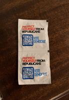

U.S. battery storage installations hit a record 57.6 GWh in 2025, and Texas is now poised to surpass California as the nationâ(TM)s largest storage market in 2026. Electrek reports: According to the US Energy Storage Market Outlook Q1 2026 from the Solar Energy Industries Association (SEIA) and Benchmark Mineral Intelligence, installations are now four times higher than totals from just three years ago. The US had a total of 137 GWh of utility-scale storage installed as of 2025, plus 19 GWh of commercial and industrial systems and 9 GWh of residential storage. Analysts expect the growth streak to continue. More than 600 GWh of energy storage is projected to be deployed nationwide by 2030, even as the Trump administration targets clean energy industries.
Two-thirds of utility-scale storage installed in 2025 was built in red states, including nine of the top 15 states for new installations. Texas is projected to surpass California as the countryâ(TM)s largest battery storage market in 2026. Standalone battery projects accounted for nearly 30 GWh of new capacity in 2025, while solar-plus-storage installations made up about 20 GWh. Residential storage deployments reached 3.1 GWh last year, a 51% increase year-over-year. Analysts say virtual power plant programs in states such as Massachusetts, Texas, Arizona, and Illinois are helping drive adoption by reducing costs and easing strain during peak demand periods.
The supply chain is shifting to support the boom. In 2025, some battery cell manufacturers pivoted production from EV batteries to dedicated stationary storage cells, converting existing lines and adjusting future plans. Lithium-ion cell manufacturing for stationary storage reached more than 21 GWh in 2025, enough to power Houston overnight, according to SEIAâ(TM)s Solar and Storage Supply Chain Dashboard. Meanwhile, US factories now have the capacity to manufacture 69.4 GWh of battery energy storage systems annually.
Read more of this story at Slashdot.
An anonymous reader quotes a report from the Guardian: When two men knocked on Ida Huddleston's door last May, they carried a contract worth more than $33m in exchange for the Kentucky farm that had fed her family for centuries. According to Huddleston, the men's client, an unnamed "Fortune 100 company," sought her 650 acres (260 hectares) in Mason county for an unspecified industrial development. Finding out any more would require signing a non-disclosure agreement. More than a dozen of her neighbors received the same knock. Searching public records for answers, they discovered that a new customer (PDF) had applied for a 2.2 gigawatt project from the local power plant, nearly double its annual generation capacity. The unknown company was building a datacenter. "You don't have enough to buy me out. I'm not for sale. Leave me alone, I'm satisfied," Huddleston, 82, later told the men.
As tech companies race to build the massive datacenters needed to power artificial intelligence across the US and the world, bids like the one for Huddleston's land are appearing on rural doorsteps nationwide. Globally, 40,000 acres of powered land – real estate prepped for datacenter development -- are projected to be needed for new projects over the next five years, double the amount currently in use. Yet despite sums that often dwarf the land's recent value, farmers are increasingly shutting the door. At least five of Huddleston's neighbors gave similar categorical rejections, including one who was told he could name any price.
In Pennsylvania, a farmer rejected $15m in January for land he'd worked for 50 years. A Wisconsin farmer turned down $80m the same month. Other landowners have declined offers exceeding $120,000 per acre -- prices unimaginable just a few years ago. The rebuffs are a jarring reminder of AI's physical bounds, and limits of the dollars behind the technology. [...] As AI promises to transcend corporeal fallibility, these standoffs reveal its very physical constraints -- and Wall Street's miscalculation of what some people value most. In the rolling hills of Mason county and farmland across America, that gap is measured not in dollars but in something harder to price: identity.
Read more of this story at Slashdot.
An anonymous reader quotes a report from the Financial Times: Officials working with Donald Trump's "Board of Peace" are exploring setting up a stablecoin for Gaza as part of efforts to reshape the devastated Palestinian enclave's economy, according to five people familiar with the discussions. The talks around introducing a stablecoin -- a type of cryptocurrency whose value is pegged to a mainstream currency, such as the US dollar -- are at a preliminary stage, and many details of how one could be introduced in Gaza remain to be determined.
But officials have discussed the idea as part of their plan for the future of the enclave, where economic activity collapsed during Israel's two-year war with Hamas and the traditional banking and payments system has been severely impaired. A person familiar with the project said the stablecoin was expected to be tied to the US dollar, with the hope that Gulf Arab and Palestinian companies with expertise in the field of digital currencies will help spearhead the effort. "This will not be a 'Gaza Coin' or a new Palestinian currency, but a means to allow Gazans to transact digitally," the person said.
Work on the idea is being led by Liran Tancman, an Israeli tech entrepreneur and former reservist who is now working as an unpaid adviser to Trump's "Board of Peace," the US-led body tasked with rebuilding Gaza, according to two people familiar with the matter. [...] According to the person familiar with the project, the "Board of Peace" and NCAG will decide on the stablecoin's regulatory framework and access, although "nothing definitive" has yet been finalized. Speaking at a meeting of the "Board of Peace" in Washington last week, Tancman said the NCAG was working on building "a secure digital backbone, an open platform enabling e-payments, financial services, e-learning, and healthcare with user control over data", but did not elaborate.
Read more of this story at Slashdot.
Panasonic is handing over the manufacturing, marketing, and sales of its TVs to Shenzhen-based Skyworth, effectively exiting in-house TV production. Ars Technica reports: Skyworth is a Shenzhen-headquartered TV brand. The company claims to be "a top three global provider of the Android TV platform." In July, research firm Omdia reported that Skyworth was one of the top-five TV brands by sales revenue in Q1 2025; however, Skyworth hasn't been able to maintain that position regularly. Panasonic made its announcement at a "launch event," FlatpanelsHD reported today. During the event, a Panasonic representative reportedly said: "Under the agreement the new partner will lead sales, marketing, and logistics across the region, while Panasonic provide expertise and quality assurance to uphold its renowned audiovisual standards with full joint development on top-end OLED models."
Panasonic also said that it will provide support "for all Panasonic TVs sold up to March 2026 and all those available from April." Skyworth-made Panasonic TVs will be sold in the US and Europe. In the latter geography, the companies are aiming for double-digit market share. [...] The news means there's virtually no TV production happening in Japan anymore, as other Japanese companies, like Sharp, Toshiba, Hitachi, and Pioneer, have already exited TV production. Earlier this year, Sony announced that it was ceding control of its TV hardware business to TCL.
Read more of this story at Slashdot.
IBM shares plunged nearly 13% on Monday after Anthropic published a blog post arguing that its Claude Code tool could automate much of the complex analysis work involved in modernizing COBOL, the decades-old programming language that still underpins an estimated 95% of ATM transactions in the United States and runs on the kind of mainframe systems IBM has sold for generations.
Anthropic said the shrinking pool of developers who understand COBOL had long made modernization cost-prohibitive, and that AI could now flip that equation by mapping dependencies and documenting workflows across thousands of lines of legacy code. The sell-off deepened a rough 2026 for IBM, whose shares are now down more than 22% year to date.
Read more of this story at Slashdot.
Linus Torvalds has pondered his professional mortality in a self-deprecating post to mark the release of the first release candidate for version 7.0 of the Linux kernel. From a report: "You all know the drill by now: two weeks have passed, and the kernel merge window is closed," he wrote in the post announcing Linux 7.0 rc1. "We have a new major number purely because I'm easily confused and not good with big numbers." Torvalds pointed out that the numbers he applies to new kernel releases are essentially meaningless.
"We haven't done releases based on features (or on "stable vs unstable") for a long, long time now. So that new major number does *not* mean that we have some big new exciting feature, or that we're somehow leaving old interfaces behind. It's the usual "solid progress" marker, nothing more.â
He then reiterated his plan to end each series of kernels to end at x.19, before the next release becomes y.0 -- a process that takes about 3.5 years -- and then pondered what happens when the next version of Linux reaches a number he finds uncomfortable. "I don't have a solid plan for when the major number itself gets big," he admitted, "by that time, I expect that we'll have somebody more competent in charge who isn't afraid of numbers past the teens. So I'm not going to worry about it."
Read more of this story at Slashdot.
U.S. artificial-intelligence startup Anthropic said three Chinese AI companies set up more than 24,000 fraudulent accounts with its Claude AI model to help their own systems catch up. From a report: The three companies -- DeepSeek, Moonshot AI and MiniMax -- prompted Claude more than 16 million times, siphoning information from Anthropic's system to train and improve their own products, Anthropic said in a blog post Monday.
Earlier this month, an Anthropic rival, OpenAI, sent a memo to House lawmakers accusing DeepSeek of using the same tactic, called distillation, to mimic OpenAI's products. Anthropic said distillation had legitimate uses -- companies use it to build smaller versions of their own products, for example -- but it could also be used to build competitive products "in a fraction of the time, and at a fraction of the cost." The scale of the different companies' distillation activity varied. DeepSeek engaged in 150,000 interactions with Claude, whereas Moonshot and MiniMax had more than 3.4 million and 13 million, respectively, Anthropic said.
Read more of this story at Slashdot.
The first fiber-optic cable ever laid across an ocean -- TAT-8, a nearly 6,000-kilometer line between the United States, United Kingdom, and France that carried its first traffic on December 14, 1988 -- is now being pulled off the Atlantic seabed after more than two decades of sitting dormant, bound for recycling in South Africa.
Subsea Environmental Services, one of only three companies in the world whose entire business is cable recovery and recycling, began the operation last year using its new diesel-electric vessel, the MV Maasvliet, and had already brought 1,012 kilometers of the cable to the Portuguese port of Leixoes by August.
TAT-8, short for Trans-Atlantic Telephone 8, was built by AT&T, British Telecom, and France Telecom, and hit full capacity within just 18 months of going live. A fault too expensive to repair took it out of service in 2002. The recovered cable is being shipped to Mertech Marine in South Africa, where it will be broken down into steel, copper, and two types of polyethylene -- all commercially valuable, especially the high-quality copper at a time when the International Energy Agency projects global shortages within a decade.
Read more of this story at Slashdot.
In her first major interview as Microsoft's new gaming chief, Asha Sharma said that "great games" must deliver emotional resonance and a distinct creative voice, while making clear that she has "no tolerance for bad AI." Stepping in after Phil Spencer's retirement, she's pledging consistency, community trust, and a human-first approach to storytelling as Xbox enters a new era. Variety reports: Sharma was quick in laying out her top priorities for Microsoft Gaming in an internal memo announcing her promotion, noting "great games," "the return of Xbox" and the "future of play" as her three main commitments to the gaming community. So first, what makes a great game for Sharma, whose roles prior to CoreAI include top positions at Instacart and Meta? The new Microsoft Gaming CEO tells Variety it's all about games with "deep emotional resonance" and "a distinct point of view." She wants to develop stories that make players "feel something," like the kind of feelings Campo Santo's 2016 first-person mystery "Firewatch" elicited in her.
Sharma takes on the mantle as head of the leading competitor to Sony's PlayStation and Nintendo knowing full well she's entering the role as an outsider to the larger gaming community and has "a lot to learn" still. But Sharma says she's got a commitment to "being grounded in what the community is telling us." "I'm coming into gaming as a platform builder," Sharma said, adding that her goal is to "earn the right to be trusted by players and developers" and show the fanbase that "consistency" over time. In her interview with Variety, Sharma acknowledged the tumultuous state of the gaming industry, referencing Matthew Ball's recent State of Video Gaming in 2026 report as evidence that the larger "transformation" of the sector is "protecting what we believe in while remaining open-minded about the future."
Due to her strong background in AI, initial reactions to Sharma's appointment have raised concerns about what her specific views are on the use of generative AI in game development. Sharma says her stance is simple: she has "no tolerance for bad AI." "AI has long been part of gaming and will continue to be," Sharma said, noting that gaming needs new "growth engines," but that "great stories are created by humans."
Read more of this story at Slashdot.
joshuark quotes a report from BleepingComputer: Microsoft is investigating a known issue that causes the mouse pointer to disappear in the classic Outlook desktop email client for some users. This bug has been acknowledged almost two months after the first reports started surfacing online, with users saying that Outlook became unusable after the mouse pointer vanished while using the app.
[...] Microsoft explained in a recent support document that the mouse pointer (and in some cases the cursor) will suddenly vanish as users move it across Outlook's interface. "When using classic Outlook, you may find that the mouse pointer or mouse cursor disappears as you move the pointer over the Outlook interface," it said. "Although the mouse pointer is not there, the email in the message list will change color as you hover over it. This issue has also been reported with OneNote and other Microsoft 365 apps to a lesser degree."
Microsoft added that the Outlook team is investigating the issues and will provide updates as more information becomes available. While a timeline for a permanent fix is not yet available, Microsoft has offered three temporary workarounds that require affected users to click an email in the message list when the cursor disappears, which may cause it to reappear. Alternatively, switching to PowerPoint, clicking into an editable area, and then returning to Outlook may also restore the mouse pointer.
Read more of this story at Slashdot.
A 7,000-word "doomsday" thought experiment from Citrini Research helped trigger an 800-point drop in the Dow, "painting a dark portrait of a future in which technological change inspires a race to the bottom in white-collar knowledge work," reports the Wall Street Journal. From the report: Concerns of hyperscalers overspending are out. Worries of software-industry disruption don't go far enough. The "global intelligence crisis" is about to hit. The new, broader question: What if AI is so bullish for the economy that it is actually bearish? "For the entirety of modern economic history, human intelligence has been the scarce input," Citrini wrote in a post it described as a scenario dated June 2028, not a prediction. "We are now experiencing the unwind of that premium."
Many of Monday's moves roughly aligned with the situation outlined by Citrini, in which fast-advancing AI tools allow spending cuts across industries, sparking mass white-collar unemployment and in turn leading to financial contagion. Software firms DataDog, CrowdStrike and Zscaler each plunged more than 9%. International Business Machines' 13% decline was its worst one-day performance since 2000. American Express, KKR and Blackstone -- all name-checked by Citrini -- tumbled. That anxiety, coupled with renewed uncertainty about trade policy from Washington, weighed down major indexes Monday. The Dow Jones Industrial Average led declines, falling 1.7%, or 822 points. The S&P 500 shed 1%, while the Nasdaq composite retreated 1.1%.
[...] Monday's market swings extended a run of AI-linked volatility. A small research outfit that has garnered a huge Substack following for macro and thematic stock research, Citrini said in its new post that software firms, payment processors and other companies formed "one long daisy chain of correlated bets on white-collar productivity growth" that AI is poised to disrupt. [...] Shares in DoorDash also veered 6.6% lower Monday after Citrini's Substack note called the delivery app a "poster child" for how new tools would upend companies that monetize interpersonal friction. In the research firm's scenario, AI agents would help both drivers and customers navigate food deliveries at much lower costs.
Read more of this story at Slashdot.
OpenAI has formed a multi-year "Frontier Alliance" with four consulting heavyweights to accelerate enterprise adoption of its no-code AI agent platform, OpenAI Frontier. TechCrunch reports: The alliance includes multi-year partnerships between OpenAI and four major consulting firms, Boston Consulting Group (BCG), McKinsey, Accenture and Capgemini, to sell its enterprise products. OpenAI's Forward Deployed Engineering team will work with the consulting giants to help them implement OpenAI's enterprise-focused technologies like OpenAI Frontier into customers' tech stacks.
The company launched OpenAI Frontier in early February. The no-code open software allows users to build, deploy, and manage AI agents both built on OpenAI's AI models and beyond. OpenAI argues in its latest announcement that consultants are the right avenue to get enterprises on board.
"AI alone does not drive transformation. It must be linked to strategy, built into redesigned processes, and adopted at scale with aligned incentives and culture to deliver sustained outcomes," BCG CEO Christoph Schweizer said in OpenAI's blog post. "Our expanded partnership combines OpenAI's Frontier platform with BCG's deep industry, functional, and tech expertise and BCG X's build-and-scale capabilities to drive measurable impact with safeguards from day one."
Read more of this story at Slashdot.
An anonymous reader quotes a report from Reuters: Researchers at ASML Holding say they have found a way to boost the power of the light source in a key chip making machine to turn out up to 50% more chips by decade's end, to help retain the Dutch company's edge over emerging U.S. and Chinese rivals. ASML is the world's only maker of commercial extreme ultraviolet lithography (EUV) machines, a critical tool for chipmakers such as TSMC, Intel and others in producing advanced computing chips. "It's not a parlor trick or something like this, where we demonstrate for a very short time that it can work," Michael Purvis, ASML's lead technologist for its EUV source light, said in an interview. "It's a system that can produce 1,000 watts under all the same requirements that you could see at a customer," he added, speaking at the company's California facilities near San Diego. [...]
With the technological advance revealed on Monday, which is being reported here for the first time, ASML aims to outdistance any would-be rivals by improving the most technologically challenging aspect of the machines. This is the quest to generate EUV light with the right power and properties to turn out chips at high volume. The company's researchers have found a way to boost the power of the EUV light source to 1,000 watts from 600 watts now. The chief advantage is that greater power translates into the ability to make more chips every hour, helping to lower the cost of each. Chips are printed similar to a photograph, where the EUV light is shone on a silicon wafer coated with special chemicals called a photoresist. With a more powerful EUV light source, chip factories need shorter exposure times. "We'd like to make sure that our customers can keep on using EUV at a much lower cost," Teun van Gogh, executive vice president for the NXE line of EUV machines at ASML, told Reuters. Van Gogh said customers should be able to process about 330 silicon wafers an hour on each machine by the end of the decade, up from 220 now. Depending on the size of a chip, each wafer can hold anywhere from scores to thousands of the devices.
ASML got the power boost by doubling down on an approach that already places its machines among the most complex inventions of humans. To produce light with a wavelength of 13.5 nanometers, ASML's machine shoots a stream of molten droplets of tin through a chamber, where a massive carbon dioxide laser heats them into plasma. This is a superheated state of matter in which the tin droplets become hotter than the sun and emit EUV light, to be collected by precision optic equipment supplied by Germany's Carl Zeiss AG and fed into the machine to print chips. The key advancements in Monday's disclosure involved doubling the number of tin drops to about 100,000 every second, and shaping them into plasma using two smaller laser bursts, as opposed to today's machines that use a single shaping burst. [...] ASML believes the techniques it used to hit 1,000 watts will unlock continued advances in the future, Purvis said, adding, "We see a reasonably clear path toward 1,500 watts, and no fundamental reason why we couldn't get to 2,000 watts."
Read more of this story at Slashdot.
Despite AI's progress in building complex software, the ubiquitous PDF remains something of a grand challenge -- a format Adobe developed in the early 1990s to preserve the precise visual appearance of documents. PDFs consist of character codes, coordinates, and rendering instructions rather than logically ordered text, and even state-of-the-art models asked to extract information from them will summarize instead, confuse footnotes with body text, or outright hallucinate contents, The Verge writes.
Companies like Reducto are now tackling the problem by segmenting pages into components -- headers, tables, charts -- before routing each to specialized parsing models, an approach borrowed from computer vision techniques used in self-driving vehicles. Researchers at Hugging Face recently found roughly 1.3 billion PDFs sitting in Common Crawl alone, and the Allen Institute for AI has noted that PDFs could provide trillions of novel, high-quality training tokens from government reports, textbooks, and academic papers -- the kind of data AI developers are increasingly desperate for.
Read more of this story at Slashdot.
An anonymous reader shares a report: PayPal, the digital payments pioneer, is attracting takeover interest from potential buyers after a stock slide wiped out almost half of its value, according to people familiar with the matter.
The San Jose, California-based company has fielded meetings with banks amid unsolicited interest from suitors, the people said. At least one large rival is looking at the whole company, while some other suitors are only interested in certain PayPal assets, the people said, asking not to be identified because the information is private.
Buyer interest in PayPal is still at a preliminary stage and may not lead to a transaction, the people cautioned. Founded in the late 1990s, PayPal was an early mover in the world of digital payments. But the company now finds itself in a rut with its customers increasingly turning to alternative ways to pay for things. PayPal's shares have fallen around 46% in New York trading over the last 12 months, giving the company a market value of about $38.4 billion.
Read more of this story at Slashdot.
Josh Dzieza / The Verge : A look at the challenges some AI developers face in building models to extract trillions of high-quality tokens from PDFs, which are hard to parse, for training — Last November, the House Oversight Committee had just released 20,000 pages of documents from the estate of Jeffrey Epstein …
Jagmeet Singh / TechCrunch : Bengaluru-based Xflow, which facilitates B2B cross-border payments, raised a $16.6M Series A led by GC at an $85M valuation, bringing its total raised to $32M+ — Xflow, an Indian fintech startup, has secured backing from both Stripe and PayPal Ventures in a $16.6 million funding round.
Reuters : Filings: some Meta execs warned in 2019 that adding E2E encryption to Facebook and Instagram messaging would hinder the ability to flag CSAM to law enforcement — Meta (META.O) executives proceeded with a plan to encrypt the messaging services connected to its Facebook and Instagram apps …
Rolfe Winkler / Wall Street Journal : A look at Apple's efforts to reshore the US chip supply chain, as the company commits to buying more than 100M chips from TSMC Arizona in 2026 — The iPhone maker wants more supply based in U.S., which remains years behind Asia Share Resize 5 Listen (2 min) You may also like Checkbox Embed code copied …
Rolfe Winkler / Wall Street Journal : Apple says it plans to move some Mac Mini production to Houston from Asia later in 2026, as part of its efforts to invest $600B in the US over four years — The company will move some production of the desktop computer to Foxconn facility in Texas — Apple will move some production …
Vicky Ge Huang / Wall Street Journal : The administrator winding down Terraform Labs sues Jane Street, alleging it engaged in insider trading to profit from and ultimately hasten Terraform's collapse — The court-appointed administrator of Do Kwon's Terraform Labs alleged that Jane Street used nonpublic information from Terraform insiders to trade
Wall Street Journal : How Binance staffers found $1B was sent to sanctioned Iranian entities via the exchange, which dismantled their probe and suspended them after Trump pardoned CZ — Weeks after Trump pardoned Binance's founder, the company dismantled probe and suspended the investigators; Binance denied inquiry ended or staff fired for the concerns
Lora Kolodny / CNBC : Tesla sues California's DMV to reverse a ruling that found Tesla violated the law by falsely promoting its Autopilot and Full Self-Driving systems — Tesla is suing California's Department of Motor Vehicles to reverse a ruling that found the automaker violated the law by falsely promoting its cars' self-driving capabilities.
Reuters : A Trump administration official says DeepSeek's new model, expected next week, was trained on Nvidia Blackwell chips, in a potential US export control violation — Chinese AI startup DeepSeek's latest AI model, set to be released as soon as next week, was trained on Nvidia's (NVDA.O) …
Bloomberg : Sources: Anthropic has lined up $5B to $6B for an employee share sale at a valuation of about $350B; outside investors will be buying up the insider shares — Anthropic is offering some current and former employees the ability to sell shares in the company at a valuation of about $350 billion …
Axios : A DOD official says xAI has agreed to let the military use Grok in classified systems and agreed to the “all lawful use” standard, which Anthropic has refused — But the Pentagon is threatening Anthropic in a dispute over safeguards and may soon need a replacement.
The Information : Sources: AI chipmaker Cerebras confidentially files for a US IPO after withdrawing a previous IPO last year, and a listing could take place as soon as April — Cerebras Systems has again made a confidential filing for a U.S. public offering, according to people with knowledge of its plans.
Salvador Rodriguez / CNBC : Uber agrees to acquire SpotHero for an undisclosed sum, to offer parking reservation for events and at venues and airports; SpotHero was last valued at $290M — Uber said it's acquiring SpotHero, a company that provides a parking reservation app for crowded downtowns, sporting events and concerts.
Pia Singh / CNBC : IBM shares closed down 13.15% after Anthropic outlined in a blog post how Claude Code can automate the exploration and analysis phases of COBOL modernization — International Business Machines stock is getting slammed Monday, becoming the latest perceived victim of rapidly developing AI technology …
Annie Palmer / CNBC : Amazon plans to invest $12B in new data centers in Louisiana and says it worked with the local utility “to ensure we pay 100% of the costs” tied to the campus — Amazon said Monday it plans to spend $12 billion on new data center campuses in Louisiana and the infrastructure …